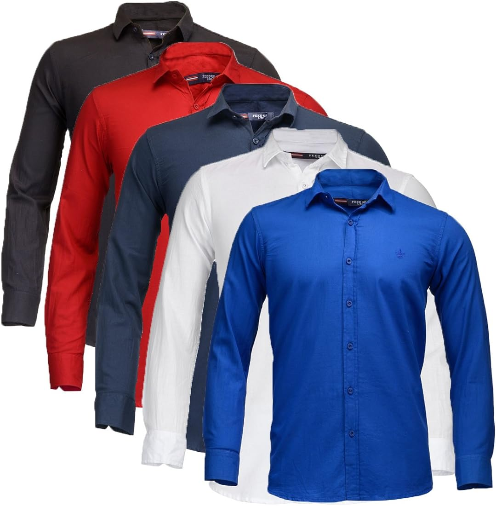
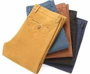

| id |
product name |
product image |
product discription |
rating |
|
| 1 |
bag |
 |
A bag is a lightweight, flexible container meant for
carrying things. A grocery bag is one you bring home
from the supermarket full of food |
345 |
454 |
|
| 2 |
jacket |
 |
A jacket typically has sleeves and fastens in the front or slightly on the side. |
222 |
99 |
| 3 |
shoes |
 |
A shoe is an item of footwear intended to protect and comfort the human foot |
400 |
50 |
| 4 |
ring |
 |
A ring is a round band, usually made of metal, worn as ornamental jewelry. |
600 |
60 |
| 5 |
pants |
 |
Pants are an article of clothing that extends from the waist to around the
ankles and fits around each leg. |
300 |
30 |